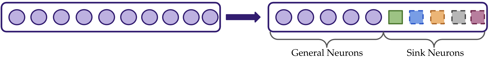
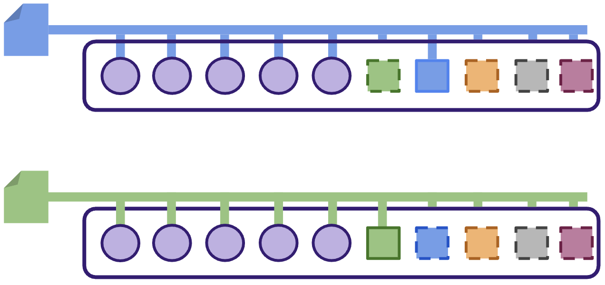
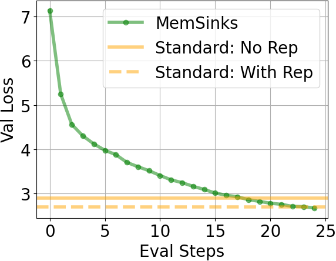
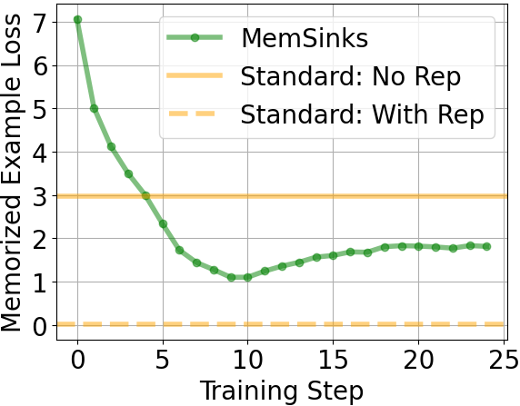
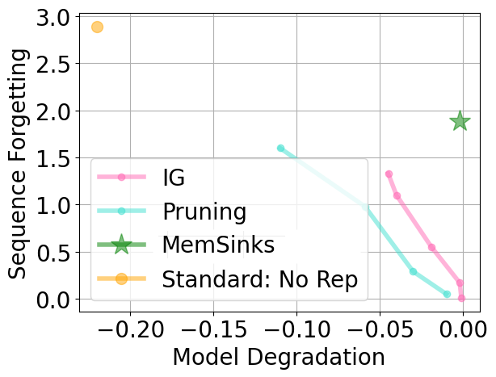
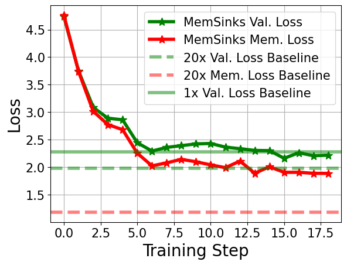
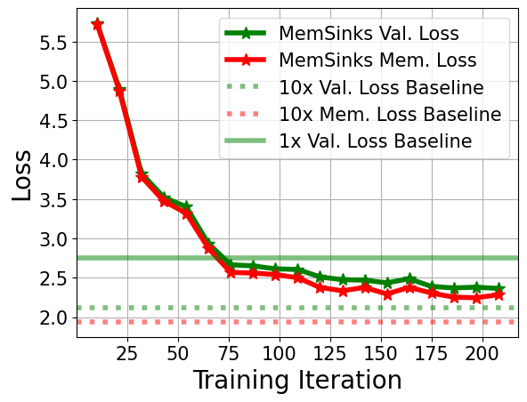

Current approaches for removing memorization rely on post-hoc weight updates (unlearning), assuming memorization is separate from general capabilities. We test this in two settings:
Key Finding: removing natural memorized sequences (passages from books, articles, etc) can significantly compromise general capabilities.

🚨 Standard training may not yield easy to unlearn models
🧠 Theoretical Intuition
Why is memorized natural text challenging to remove post-hoc? In the paper, we theoretically analyze simplified linear neural network models and show that minimimum norm bias of gradient flow prefers solutions which reuse neurons for memorization and general language capabilities.
Given the shortcomings of removing memorization post-hoc, we propose a new training paradigm, MemSinks to simultaneously achieve two goals:
Desiderata
Isolate Memorization: Memorization should be stored in a known and removable set of neurons.
Preserve General Capabilities: The model should learn general capabilities from all data.
We achieve this by proposing a training method (described next) which isolates memorization to special ``sink” neurons that can be straightforwardly removed post-hoc.
To deploy MemSinks, we first annotate the training data to specify how sequences should be localized. In our work, we primarily examine the memorization of repeated documents and thus give each pretraining document an ID.
💻 Implementation Details
Generating Sequence Annotations: We can efficiently generate sequence annotations by simply hashing the tokens in each document.
⏩ Future Work
Alternative Annotation Approaches: An interesting future direction is to explore alternative ways to annotate data. Leveraging information such as the document source, topic, or semantic clusters could potentially enable localization (and unlearning) at coarser levels of granularity.

We split the hidden MLP neurons at each transformer layer into two groups: sink neurons and general neurons. Sink neurons specialize to memorization, while general neurons aggregagte capabilities across the corpus.

During training, only a subset of sink neurons are activated on any given training update. The subset of sink neurons activated is determined using the sequence identifier annotations. This ensures that repeated data updates a consistent set of sink neurons throughout training.
Our masking of sink neurons is inspired by dimensionality reduction. Ideally, each sequence would have a dedicated set of neurons to store its memorization. However, this would require the number of neurons to grow with the total number of training sequences! Our neuron masking scheme can be viewed as a low-dimensional projection of this ideal case and we empirically find this is sufficient to encourage localization!
💻 Implementation Details
Loading Sequence Annotations: We store sequence identifiers for each token and interleave them into the token stream, enabling efficient data loading while maintaining sequence-level information even when chunks cross document boundaries.
Efficiently Implementing Selective Activation of Sinks: We implement selective activation using deterministic binary masks computed from sequence identifiers. Our tensorized seeded random number generator efficiently computes activation masks on-the-fly, avoiding the need to pre-compute and store masks for every sequence.
Given a model trained with MemSinks, we can remove memorized sequences by simply dropping out the sink neurons. No finetuning needed!
⏩ Future Work
Targeted Unlearning In this work, we focused primarily on removing memorization entirely from the model. As such, we primarily test the case of removing all sink neurons. However, an important direction for future work is to enable targeted removal of specific memorized sequences, while preserving others.
MemSinks are similar to Mixture of Experts models (MOE), which also selectively activate model components. In MOEs, however, the activation of experts is performed by a learned router, which empirically struggles to enforce localization (i.e. [1] ,[2]). The learned router means that MOEs provide no explicit control over how memorization is stored.
In MemSinks, we get rid of the learned router and directly enforce a pre-specified localizaiton scheme (using the sequence annotations). This allows the model designer direct control over how memorization is stored, enabling removal by design.
🏆 Desiderata
✅ Isolate Memorization: In the middle panel of Figure 2, we see that the MemSinks model has significantly higher loss on the repeated stories than standard training.
✅ Preserve General Capabilities: We see that MemSinks achieves comparable validation loss as standard training in the left panel of Figure 2. Moreover, the right panel of Figure 2 shows that MemSinks achieves a better tradeoff between removing memorization and preserving general capabilities than post-hoc methods.





@inproceedings{
ghosal2025memorization,
title={Memorization Sinks: Isolating Memorization during {LLM} Training},
author={Lawrence Feng and Gaurav R. Ghosal and Jacob Mitchell Springer and Ziqian Zhong and Aditi Raghunathan},
booktitle={Forty-second International Conference on Machine Learning},
year={2025},
url={https://openreview.net/forum?id=sRJrMPu5Uu}
}